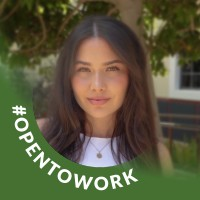
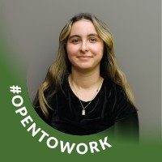
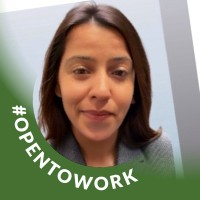

Five teams. Real client work. Rolling cohorts. You are placed on a team, given something that matters, and expected to lead it.
Open to students, career changers, and transitioning service members.
The whole picture
Where people come from, what they actually do here, and where they land afterwards. The middle is the part nobody else explains.
Universities, industry, and the military.
One of five teams, one of roughly twenty roles.
Roles, companies, and graduate programs.
Placeholder examples drawn from the July programme review. Real alumni routes replace these before launch.
How it works
Cohorts run on a rolling basis, so there is always a way in and never an open door.
A short application and a conversation. We are looking for people who will show up, not people with the longest résumé.
HR, IT, marketing, operations or business. Placement is based on where you will grow fastest, not only what you have done before.
Client work, internal builds, and projects with named owners. You own a piece of it and you present it.
Friday showcases, impact retrospectives, and company kickoffs. Your work is seen by people outside your team every week.
Offboarding is a handover, not a goodbye. Alumni return for events, referrals, and mentorship.
The five teams
Culture
Cameras on. Microphones on. You are expected in the room, and the room is expected to be worth showing up to. It is the part of the programme people mention years afterwards, and the part that is hardest to put on a page.
Whether or not you are in the leadership track. Leading a meeting, a project, or a team is the default expectation rather than a reward for seniority.
A designer can sit in on a data review. An analyst can build a dashboard. Nobody is fenced into their job title.
Quarterly Momentum Office Party events in different cities, so the team meets in person and alumni stay in the room.
What you take with you
The tools you will actually use
Listed openly so you can judge the fit yourself. If half of this is unfamiliar and you want to learn the rest, that is the right reaction.
In their words
“PROJXON helps companies grow, while the internship program helps its interns develop into competent, knowledgeable professionals. Throughout this experience, I have become more collaborative, communicative, detail-oriented, and creative.”
“Participating in the MIP has been a pivotal experience, enhancing my project management skills and deepening my understanding of strategic planning. The hands-on projects and collaborative environment have significantly contributed to my professional growth and readiness for future challenges.”

“The MIP is a great opportunity to learn about working in a professional environment. Everyone is very supportive, helpful, and very knowledgeable.”

“My MIP experience has been transformative, providing hands-on experience in project management and web development while working alongside industry professionals who have helped me bridge the gap between academic knowledge and real-world application through meaningful project contributions and continuous mentorship.”
“The MIP has provided me with invaluable hands-on experience in project management, allowing me to develop critical skills in data tracking and team collaboration. This program has been instrumental in bridging the gap between academic learning and real-world application, preparing me for future career success.”

“I have learned more in 3 months as web developer here than I did in a year of self study. PROJXON gives you the opportunity and resources to really focus on real world problems to boost your experience. I am immensely grateful for the opportunity provided here and confident I have the skills for what comes in my future!”
Questions
It is an unpaid programme, and we are direct about that. Many participants are sponsored through their university, a workforce development programme, or a military transition programme. If that applies to you, we will give you what you need to make the case.
Often, yes. Universities need to sign off, and the same applies to CPT and OPT arrangements. Tell us early and we will work with your institution.
No. Several of the strongest participants came from legal, business and design backgrounds. What matters is whether you want to learn the tools, not whether you already know them.
Placeholder. Confirm the weekly commitment and non-negotiables before launch.
You join the alumni network, which stays active through events, referrals and mentorship. Alumni are invited back to Momentum Office Party events after they leave.
Partnership
Most of our participants arrive through someone: a university, a workforce development programme, a transition office. Here is what that looks like from your side.
Students join a working team rather than shadowing one, and leave with a portfolio, references and a professional network. We work with institutions on academic credit, and on CPT and OPT arrangements where those apply. Tell us early and we will provide whatever documentation your office needs.
For programmes moving people into professional roles, the gap is rarely ability. It is the absence of recent, verifiable work. Participants here do real client and internal projects with named owners, which is the evidence that gap needs.
Transitioning service members and military spouses are a standing part of our intake. The programme is remote and runs on rolling cohorts, which tends to fit around relocation and separation timelines better than a fixed-date internship.
Apply
If you have read this far, you already know whether it fits. The application takes a few minutes.
Universities and workforce development partners, get in touch about placements and credit.